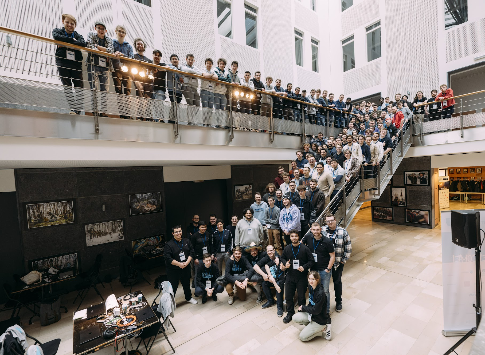

The Cyber Security Challenge Belgium is a Capture The Flag (CTF) competition designed for students in Belgium.
It’s a computer security competition where teams of up to four students work together to solve challenges over a limited time. These challenges cover a wide range of cybersecurity topics, including cryptography, reverse engineering, and web application security.
Here’s some key information about the Cybersecurity Challenge Belgium:
- Target Audience: Students in Belgium
- Competition Style: Capture The Flag (CTF)
- Team Size: Maximum 4 students
- Challenge Areas: Cryptography, reverse engineering, network security, web application security, wireless and forensics analysis
- Challenge Difficulty: Ranges from beginner to expert
The competition is organized by Toreon and Nviso with the goal of raising awareness about cybersecurity careers and building a more secure digital society. Over 700 students participated in 2020, making it a major cybersecurity event in Belgium.

For the third year in a row, my friends and I decided to test our wits at the Cyber Security Challenge Belgium! This year, we upped the ante with a truly legendary team name: “we thought this was speed dating.” Let’s just say, the competition was a lot more about cracking codes than cracking jokes (although there were definitely a few nervous giggles along the way).
The qualifiers in March were intense. We spent two straight days glued to our screens, deciphering cryptic messages, untangling networks, and diving headfirst into the fascinating world of cybersecurity challenges. While some of the problems had us scratching our heads, the feeling of finally cracking a particularly tough challenge was pure exhilaration. It’s like solving a puzzle you never knew existed, and the satisfaction is incredible.
There were moments of pure frustration, of course. We hit a wall on a particularly nasty reverse engineering challenge, spending hours making zero progress. But that’s the beauty of teamwork. One of us stumbled upon a seemingly irrelevant clue that, with a bit of brainstorming, ended up being the key to unlocking the entire thing. That’s what makes CTFs so much fun – it’s not just about individual skills; it’s about effective communication and leveraging each other’s strengths.
To our absolute delight, “we thought this was speed dating” managed to snag a spot in the finals at the Royal Military Academy! The competition there was even fiercer, with teams from all over Belgium battling it out for CTF glory. We may not have taken home the grand prize, but we definitely held our own against some seriously talented competitors.
More importantly, the experience was simply unforgettable. We learned a ton about cybersecurity, pushed our problem-solving skills to the limit, and most importantly, had a blast doing it.